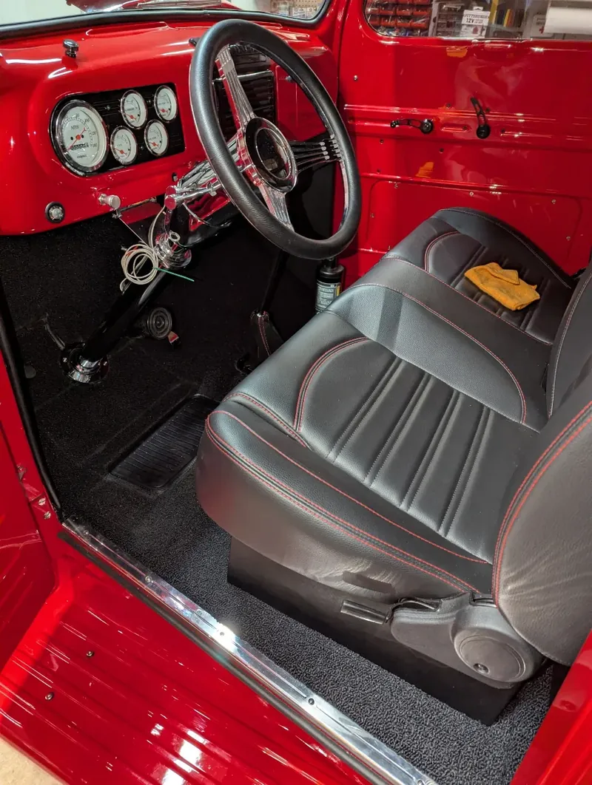
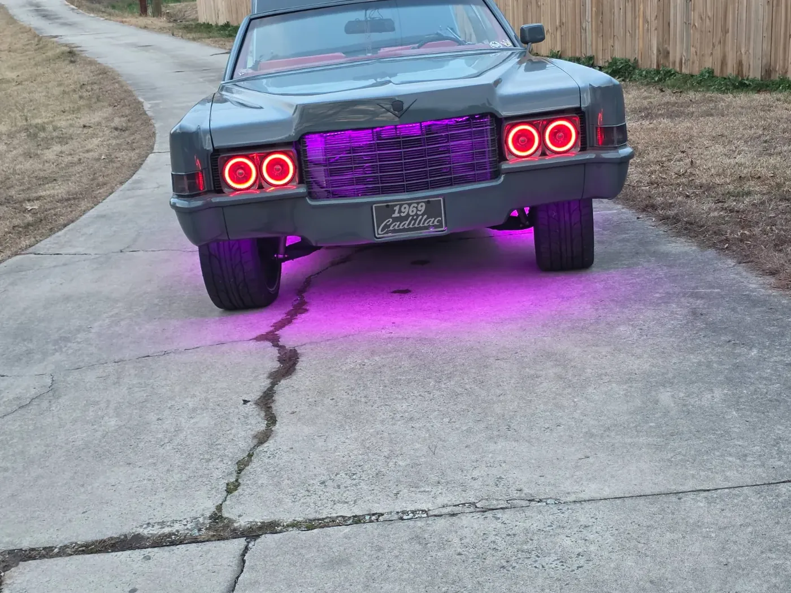
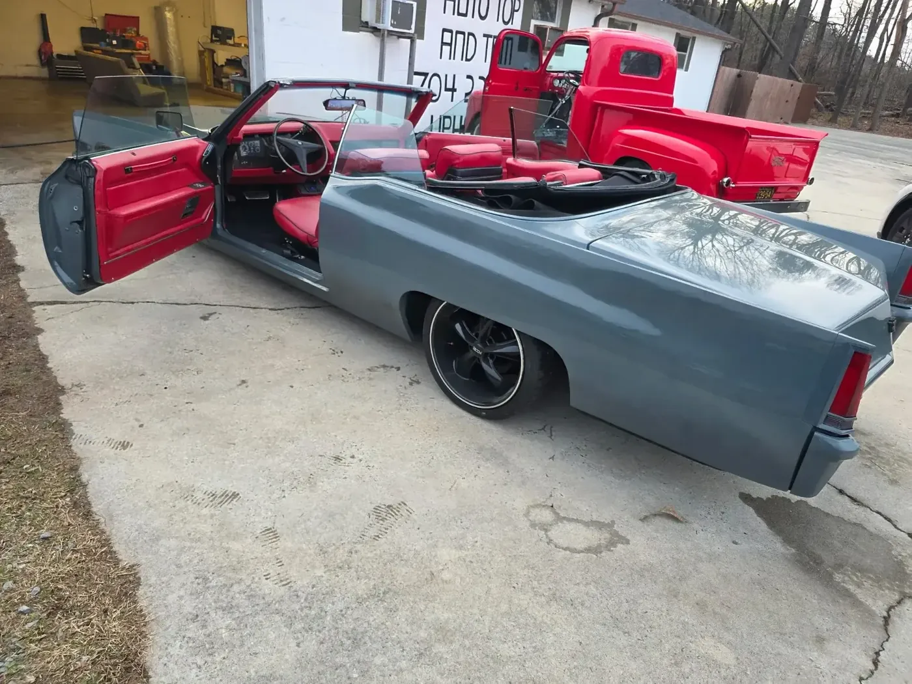
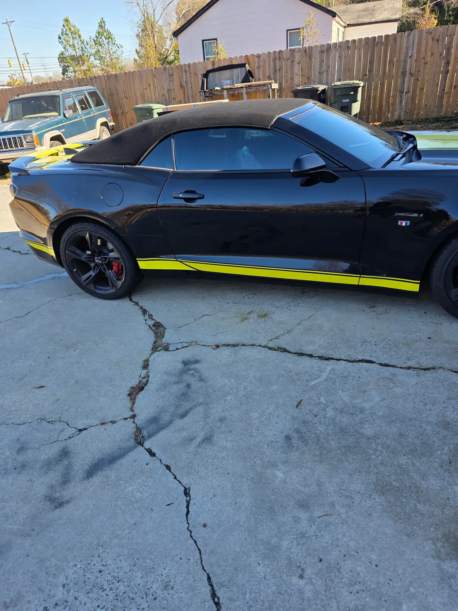

Convertible tops
Convertible top replacement in Monroe, NC
A new top is really three jobs: the fabric, the window, and whatever needs repairing on the frame underneath. We quote all three.

Materials
- Quality vinyl — holds up well in Carolina sun
- Canvas cloth — correct on a classic, ages gracefully
- Samples shown in the shop before you decide
Windows
- Heated glass rear windows
- Plastic curtain replacement
- Often the reason the top failed first
The frame underneath
- Collapsed pad replacement
- Bent bow straightening
- Checked before we quote, not after
Recent work
Jobs out of this shop






Questions
Common questions
How much does a convertible top replacement cost?
It depends on three things: the material you choose, whether the rear window is heated glass or plastic, and the condition of the frame and pads underneath. Most quotes people bring us from elsewhere only cover the fabric. We give you an itemized estimate covering all three, at no cost.
Can you quote from a photo?
We would rather not, and it is in your interest too. A photo cannot show collapsed pads or bent bows, and a new top fitted over a bad frame will never sit right. Bring the car by and we will walk it with you.
Vinyl or canvas — which should I pick?
Vinyl costs less up front and handles the sun here very well. Canvas cloth costs more, looks correct on a classic, and ages more gracefully. We keep both in the shop so you can see and feel the difference before deciding.
How long does it take?
Most tops are a few days once the material is in hand. Frame or pad repair adds time. We will give you a realistic window with the estimate.
Ready to talk about your project?
Bring the vehicle by the shop in Monroe and we'll walk it with you, show you material samples, and give you an itemized estimate at no cost.